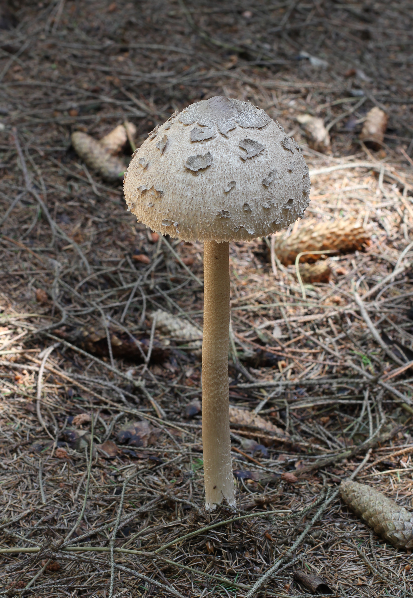
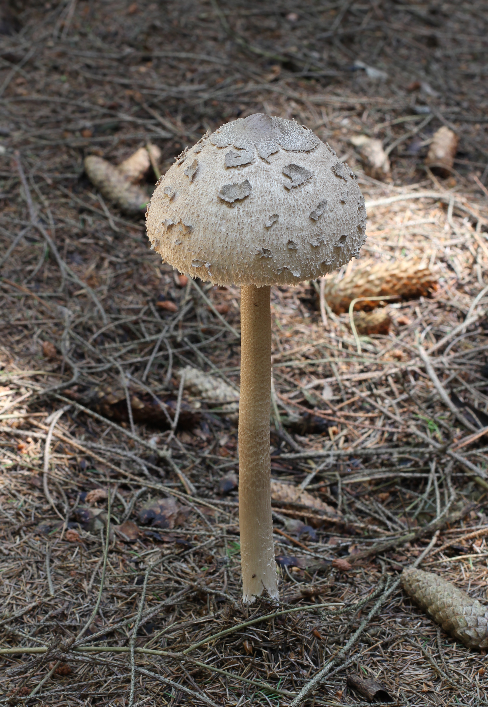

| Cecha | Opis |
|---|---|
| Kapelusz | 10 - 25cm, jasnobrązowy, młody jest kształtu pałeczki do bębna, później staje się wypukły, następnie płasko rozpostarty z garbkiem, popękany na duże włóknisto-strzępiaste łuski. |
| Blaszki | Białe, gęste, wybrzuszone, wolne. |
| Trzon | Białawy, w drobne brązowawe łuseczki lub we wzór zygzakowaty, cylindryczny, bardzo długi, smukły; poodstawa bulwiasta; pierścień podwójny, grubobłoniasty, przesuwalny. |
| Miąższ | Biały, delikatny, w trzonie zdrewniały, włóknisty. Zapach i smak orzechowy. |
| Zarodniki | 15 - 20 x 10 - 13µm, gładkie. Wysyp biały. |

Najczęściej pojawiają się od lipca do października.

Zwłaszcza w lasach liściastych pod bukami, rzadziej można go spotkać w lasach iglastych.

Różni się brakiem łusek na trzonie, a jej miąższ czerwienieje po uszkodzeniu.
Czubajka gwiaździsta ma inny wzór na trzonie, jest znacznie mniejsza i posiada mniej łat na kapeluszu.
Muchomora sromotnikowego od kani odróżnia nieruchomy u muchomora pierścień na trzonie, obecność pochwy u podstawy trzonu oraz fakt, że kania ma łuskowaty, brązowawy kapelusz z zygzakowatym wzorem.